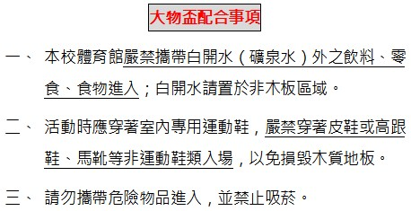

國立彰化師範大學
本校分兩個校區：進德校區 與 寶山校區。
本屆賽事都集中在進德校區。
體育館相關規定

○進德校區地址：彰化市進德路１號 電話：04-7232105
ａ、鐵路：
從彰化火車站搭乘「彰化客運」、「台中客運」102路線、「台汽客運」往台中、大甲或埔里
方向的班車，於彰化師大站下車，步行約五分鐘，即可抵達。
ｂ、中山高速公路：
1. 彰化市以北者，經高速公路南下，下王田交流道，經大肚橋、台化工廠左轉進德路，即可抵達。
2. 彰化市以南者，經高速公路北上，下彰化交流道，沿中華西路、中華路、孔門路、中山路，
右轉進德路，即可抵達。
ｃ、國道三號高速公路：
由快官系統交流道（往彰化方向）下中彰快速道路(台74線)，至中彰終點右轉彰南路(台14線)，
至中山路左轉，經台化工廠，左轉進德路，即可抵達。
○寶山校區地址：彰化市師大路２號 電話：04-7232105
ａ、鐵路：
從彰化火車站搭乘彰化客運往「保四」方向公車，於彰化師大寶山校區下車。
（約半小時一班，但離峰時段班次較少）。
ｂ、中山高速公路：
高速公路下彰化交流道，沿中華西路、中央路、中山路、中興路，經縣立體育場、
師大路，即可抵達。
ｃ、國道三號高速公路：
由快官系統交流道（往彰化方向）下中彰快速道路(台74線)，至中彰終點，往前沿台74甲線，
右轉縣道139線，即可抵達。
校園平面圖
進德校區
寶山校區